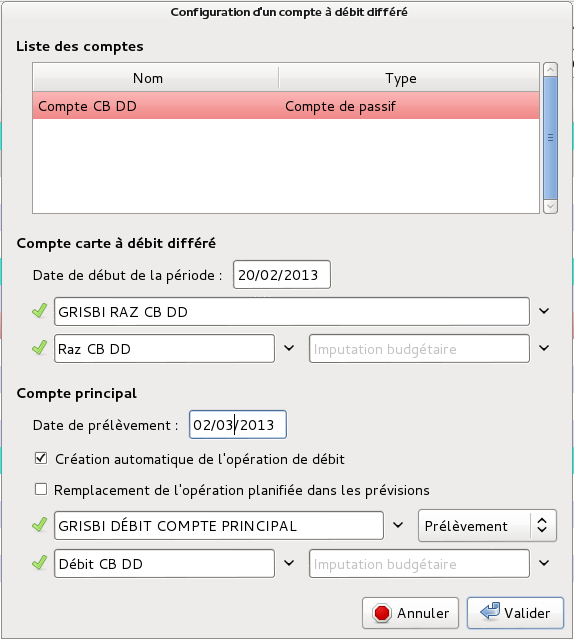

Chapitre 18 Gestion des cartes bancaires et leurs prévisions
Les cartes bancaires sont des instruments bancaires très utilisés. Il en existe plusieurs types :
-
carte à débit immédiat,
- carte à débit différé,
- carte de crédit,
- porte-monnaie électronique.
18.1 Carte bancaire à débit immédiat
Une carte bancaire à débit immédiat vous permet de régler vos achats et de faire des retraits dans les distributeurs de billets. Elle fonctionne en liaison avec votre compte courant.
18.1.1 Gestion d’une carte bancaire à débit immédiat
Toutes les opérations faites avec cette carte sont comptabilisées et débitées sur votre compte courant, immédiatement. Chaque opération se comporte exactement comme si c’était un chèque. Le relevé bancaire périodique liste donc ces opérations avec toutes les autres.
Pour gérer vos opérations sur une carte bancaire, saisissez-les dans votre compte courant, comme n’importe quelle opération, et faites les rapprochements bancaires régulièrement (voir le chapitre 9, Rapprochement bancaire).
Vous pouvez posséder plusieurs cartes bancaires à débit immédiat attachées au même compte courant.
18.1.2 Prévisions pour une carte bancaire à débit immédiat
Les opérations sur ces cartes étant portées sur le compte courant avec toutes les autres opérations, la carte bancaire est alors un moyen de paiement comme les autres (chèques, virements, etc.). Vous ne pourrez donc pas faire une budgétisation spécifique à ces dépenses de carte. Les prévisions budgétaires se feront alors normalement, par la sélection des (sous-) catégories ou des (sous-) imputations budgétaires dans l’onglet Données historiques de ce compte (voir le chapitre 17, Budgets prévisionnels).
18.2 Carte bancaire à débit différé
Une carte bancaire à débit différé vous permet de régler vos achats et de faire des retraits dans les distributeurs de billets ; de plus, elle est liée à un compte spécifique ouvert chez votre banque, et se caractérise par les éléments suivants :
-
une période pendant laquelle les dépenses sont comptabilisées dans le compte de la carte ; cette période, communément d’un mois, ne commence pas nécessairement le premier jour du mois ; par exemple, elle peut débuter le 20 du mois, et se terminer le 19 du mois suivant ;
- un relevé de la banque qui vous informe de l’ensemble des dépenses après la fin de la période ;
- une date de prélèvement, à laquelle le montant total des dépenses de cette période est prélevé par la banque sur votre compte courant.
Note : selon le contrat de la carte, les retraits en distributeur automatique ne bénéficient pas obligatoirement du débit différé, et il faudra alors les gérer dans le compte courant comme pour une carte à débit immédiat.
18.2.1 Gestion manuelle d’une carte bancaire à débit différé
Si vous possédez une ou plusieurs cartes bancaires à débit différé, vous pouvez tout à fait gérer leurs opérations dans votre compte courant, en saisissant pour date d’opération :
-
soit leur date d’opération réelle, mais les soldes après chaque opération ne tiendront pas compte du différé de débit ;
- soit la date du prélèvement par la banque, mais vous perdez alors l’information de la date d’opération ;
- soit leur date d’opération et leur date de valeur mise à la date de prélèvement, et vous conservez ces informations.
Dans ces trois cas, les rapprochements de ce compte courant devront être faits avec à la fois son relevé de compte et tous ceux de vos comptes de carte, ce qui les rendra assez compliqués.
Puisque ces cartes sont gérées par votre banque à travers un compte spécifique, la manière la plus logique sera de gérer ces cartes dans Grisbi à travers un ou plusieurs comptes dédiés, qui seront du type compte de passif, car leur solde ne peut pas être positif.
Si vous avez une seule carte bancaire à débit différé, créez d’abord un compte dédié à cette carte, avec un solde initial nul. Ensuite, sa gestion se déroule comme suit :
-
pendant toute la période de la carte, saisissez dans ce compte de carte toutes les opérations faites avec la carte (achats, mais aussi remboursements) ;
- après la date du début de période suivante, vous recevez de la banque le relevé de compte de cette carte ;
- faites le rapprochement de ce compte de carte avec ce relevé de compte ;
- saisissez une opération de remise à zéro du compte de carte en faisant un virement depuis le compte courant et portant la date de prélèvement ;
- à la date de prélèvement, la banque prélève sur votre compte courant un montant égal au solde de la carte pour la période précédente ;
- vous pouvez alors faire le rapprochement de ce compte courant avec son relevé de compte.
Si vous avez plusieurs cartes bancaires à débit différé, vous avez deux possibilités :
-
soit vous créez un seul compte pour toutes ces cartes, à la condition impérative que leurs dates de prélèvement et leurs périodes de comptabilisation soient identiques, et vous gérez ce compte comme ci-dessus ;
- soit vous créez un compte pour chacune des cartes et vous gérez chaque compte comme ci-dessus ; c’est ce qui est conseillé pour avoir une meilleure lisibilité des comptes ; dans ce cas, vous pouvez aussi afficher leur solde global dans la page d’accueil, en créant un groupe de comptes pour toutes ces cartes (voir dans le menu Édition - Préférences, le paragraphe 22.1.8, Soldes partiels de la liste des comptes).
18.2.2 Gestion automatique et prévisions pour une carte bancaire à débit différé
Note : dans cette section, nous appelons «compte carte » le compte dans lequel vous saisissez les dépenses de la carte bancaire à débit différé, et «compte principal » votre compte courant bancaire, celui qui gère vos opérations ordinaires, à partir duquel sera débité le solde du compte carte.
Pour assurer cette gestion automatique, Grisbi dispose de quatre fonctionnalités :
-
dans l’onglet Prévisions du compte principal, l’affichage du solde des dépenses effectuées sur le compte carte, à la date de prélèvement, en temps réel et jusqu’à la fin de la période de cette carte ; ensuite, ce solde est figé ;
- dans l’onglet Opérations du compte carte, la remise à zéro automatique du solde, par la création automatique de l’opération de débit dans ce compte, à la date de début de la période suivante ;
Note : ces deux premières fonctionnalités sont liées : on ne peut pas les dissocier.
- dans l’onglet Opérations du compte principal, le débit automatique du montant du solde du compte carte, à la date de prélèvement ;
Note : Grisbi opère comme le fait votre banque : il met à zéro le solde du compte carte à la date de début de période suivante de la carte (2e fonctionnalité), et il débite le compte principal du montant de ce solde du compte carte à la date de prèlèvement de la carte (3e fonctionnalité) ; ces deux opérations sont donc dissociées.
- dans l’onglet Prévisions du compte principal, les prévisions de dépenses sur le compte carte, pour les mois suivants, basées sur une opération planifiée d’un montant que l’on aura estimé à partir des dépenses passées ;
et tout ceci tout au long de la période de prévisions.
Les sous-sections suivantes décrivent les différentes actions qu’il vous faudra exécuter, dans l’ordre :
-
création d’un compte carte, des catégories et des tiers ;
- configuration d’un compte carte et du compte principal ;
- configuration des quatre fonctionnalités ;
- création de l’opération planifiée.
Création d’un compte carte, des catégories et des tiers
Pour assurer la gestion automatique d’une carte bancaire, vous devez définir un compte carte, ainsi qu’au moins un nouveau tiers et deux nouvelles catégories (ou imputations budgétaires) pour identifier les opérations automatiques ; le compte carte sera réservé à la saisie des dépenses avec la carte bancaire, et sera du type compte de passif, car son solde ne peut pas être positif. Les noms employés ici ne sont que des exemples et vous pouvez définir ceux que vous préférez.
Procédez comme suit :
-
créez un compte de passif, par exemple «Compte CB DD » (pour Carte Bancaire Débit Différé) (voir la section 7.4, Création d’un nouveau compte) ; pendant cette création, ou bien par la suite dans son onglet Propriétés(voir la section 7.3, Propriétés d’un compte), définissez-y les montants maximaux de dépenses pour l’activation des alertes :
-
mettez à zéro le champ Solde initial,
- renseignez le champ Solde minimal autorisé par un nombre en-dessous duquel vous serez averti d’arrêter les dépenses (pour éviter aussi le message d’alerte «Compte sous le solde minimal autorisé » à la moindre dépense) ; ce nombre négatif peut être estimé par un maximum de vos dépenses mensuelles, ou bien défini par votre contrat de carte bancaire, par ex. -2000,
- renseignez le champ Solde minimal voulu par un nombre en-dessous duquel vous serez averti du risque de dépassement de dépenses (pour éviter aussi le message d’alerte «Compte sous le solde minimal voulu » à la moindre dépense) ; ce nombre négatif peut être estimé par un maximum voulu de vos dépenses mensuelles, par ex. -1800 (il doit être supérieur au Solde minimal autorisé),
- dans l’onglet Catégories (ou Imputations budgétaires), créez une nouvelle catégorie (ou imputation budgétaire), par exemple «Raz CB DD », de type Crédit, qui sera dédiée, dans le compte carte à l’opération de remise à zéro du solde de ce compte carte ;
- dans le même onglet, créez une nouvelle catégorie (ou imputation budgétaire), par exemple «Débit CB DD », de type Débit, qui sera dédiée, dans le compte principal, à l’opération de débit du solde du compte carte ;
Note : il est obligatoire que ces catégories (ou imputations budgétaires) soient utilisés uniquement pour ces opérations, sinon cela ne fonctionnera pas.
- dans l’onglet Tiers, créez un nouveau tiers, par exemple «GRISBI RAZ CB DD », qui sera dédié, dans le compte carte, à l’opération de remise à zéro du solde de ce compte carte ;
- dans le même onglet, créez aussi un nouveau tiers, par exemple «GRISBI DÉBIT COMPTE PRINCIPAL », qui sera dédié, dans le compte principal, à l’opération de débit du solde du compte carte.
Note : ces tiers peuvent aussi être utilisés pour d’autres opérations ; vous pouvez aussi ne créer qu’un seul tiers pour ces deux fonctions, avec un nom adéquat, mais en avoir deux différents et réservés à ces fonctions permet une meilleure lisibilité des opérations.
Si vous avez plusieurs cartes bancaires à débit différé, vous avez deux possibilités :
-
soit vous créez un seul compte pour toutes ces cartes, à la condition impérative que leurs dates de prélèvement et leurs périodes de comptabilisation soient identiques ; cela vous permettra de configurer toutes les cartes en une seule fois, mais vous n’aurez pas une bonne lisibilité sur les opérations de chacune des cartes, et le rapprochement de ce compte sera compliqué car il devra être fait avec tous les relevés de compte de carte ;
- soit vous créez un compte pour chacune des cartes ; c’est ce qui est conseillé pour avoir une meilleure lisibilité des comptes, et les rapprochements se feront compte par compte ; dans ce cas, vous pouvez aussi créer un un groupe de comptes pour toutes ces cartes, ce qui vous permettra de les configurer tous en une seule fois et de n’avoir qu’une seule ligne de prévisions, et vous pourrez aussi afficher leur solde global dans la page d’accueil, (voir dans le menu Édition - Préférences, le paragraphe 22.1.8, Soldes partiels de la liste des comptes).
Configuration d’un compte carte et du compte principal
Pour configurer ces comptes, procédez comme suit :
-
dans le menu Préférences - Budget prévisionnel - Données des comptes, sélectionnez le compte principal dans la liste déroulante, et cochez la case Utiliser le module budgétaire (voir le chapitre 17, Budgets prévisionnels) ;
- dans le même menu, sélectionnez le compte carte («Compte CB DD ») dans la liste déroulante, et cochez la case Utiliser le module budgétaire puis, juste en-dessous, cochez la case Compte avec carte à débit différé ; validez par le bouton Fermer ;
- dans l’onglet Prévisions de votre compte principal :
-
dans l’en-tête des prévisions, réglez la Durée d’estimation à deux mois minimum,
- sur la même ligne, pour la Date de départ, cochez la case Automatique.
Configuration des quatre fonctionnalités
Vous pouvez maintenant configurer l’une après l’autre les quatre fonctionnalités décrites dans la section 18.2.2, Gestion automatique et prévisions pour une carte bancaire à débit différé.
Ces quatre fonctionnalités sont configurables dans une fenêtre unique, accessible dans l’onglet Prévisions du compte principal ; les deux premières sont fonctionnellement liées, et on ne peut pas les dissocier ; les deux dernières sont indépendantes, et vous pouvez les configurer séparément, selon votre besoin. Cependant, il est conseillé de les configurer toutes, car ce serait dommage de se priver d’une gestion de carte entièrement automatisée !
Dans le tableau des prévisions du compte principal, cliquez-droit sur une ligne proche de la date de prélèvement de la carte bancaire, et sélectionnez Insérer le solde d’un compte à débit différé : la fenêtre Configuration d’un compte à débit différé s’affiche :

| Figure 18.1: Configuration d’un compte à débit différé |
Vous pouvez à tout moment fermer cette fenêtre en cliquant sur le bouton Valider ; vous pouvez afficher la fenêtre de configuration par un double-clic sur la ligne libellée Solde du compte : Compte carte bancaire DD et affichée sur fond vert, puis la modifier si besoin est ; vous pouvez aussi la supprimer en sélectionnant Supprimer la ligne dans le menu contextuel accessible par un clic-droit sur cette ligne.
-
dans la zone Liste des comptes, sélectionnez le compte carte («Compte CB DD ») ; vous pouvez aussi choisir un groupe de comptes cartes défini auparavant, qui se comportera de la même manière qu’un compte carte ;
Note : cette zone n’affiche que les comptes pour lesquels la case de libellé Compte avec carte à débit différé a été cochée, voir la section 22.6.2, Données des comptes, ou bien des groupes de ces comptes.
- dans la zone Compte carte à débit différé :
-
dans le champ libellé Date de début de la période, saisissez la date du début de la prochaine période de la carte,
- en-dessous, dans le champ nommé Tiers, saisissez le nom du tiers dédié «GRISBI RAZ CB DD »,
- en-dessous, dans le champ nommé Catégorie à gauche ou Imputation budgétaire à droite, saisissez le nom de la catégorie (ou de l’imputation budgétaire) dédiée «Raz CB DD » ; cette saisie n’est pas obligatoire, mais cela permet d’y affecter les opérations de remise à zéro du solde de compte carte, sinon elles seront affectées à la catégorie Pas de catégorie ;
- dans la zone Compte principal :
-
dans le champ libellé Date de prélèvement, saisissez la prochaine date de prélèvement de la carte ;
- si vous validez la fenêtre, elle se ferme et la ligne Solde du compte : Compte CB DD s’affiche alors sur fond vert dans le tableau de prévisions du compte principal, à la date de prélèvement ; il sera mis à jour à chaque saisie de nouvelle opération sur le compte de carte ; de plus, la remise à zéro du compte carte sera faite automatiquement à la prochaine date de début de période ; ces deux fonctionnalités sont liées et on ne peut pas les dissocier ;
- si ces deux premières fonctionnalités (affichage du solde des dépenses dans l’onglet Prévisions et remise à zéro automatique du solde du compte carte) vous suffisent, vous pouvez arrêter ici la configuration ; sinon, continuez ;
Note : vous pourrez toujours reprendre ici la configuration de la troisième fonctionnalité, ultérieurement.
- dans la zone Compte principal :
-
si vous désirez la troisième fonctionnalité (débit automatique du solde du compte carte dans le compte principal), cochez la case Création automatique de l’opération de débit,
Note : vous pouvez tout à fait choisir de ne pas activer cette fonctionnalité si elle ne vous convient pas, et dans ce cas, vous devrez saisir cette opération de débit manuellement chaque mois…
- en-dessous, dans le champ nommé Tiers, saisissez le nom du tiers dédié «GRISBI DÉBIT COMPTE PRINCIPAL » ; cela est obligatoire, sinon Grisbi ne créera pas l’opération de débit du compte principal,
- choisissez le mode de paiement dans la liste déroulante à droite ; normalement, il ne s’agit pas d’un virement interne, puisque Grisbi dissocie les opérations de remise à zéro du compte carte et de débit du compte principal : préférez alors Prélèvement, ou tout autre mode que vous auriez créé à cet effet,
- en dessous, dans le champ nommé Catégorie à gauche ou Imputation budgétaire à droite, saisissez le nom de la catégorie dédiée (ou de l’imputation budgétaire) «Débit CB DD » ; cela n’est pas obligatoire, mais il est conseillé de le faire pour un bon classement des opérations ;
- si vous validez la fenêtre, elle se ferme et le solde du compte carte sera débité à la date de prélèvement de la carte, dans l’onglet Opérations du compte principal ; si cette troisième fonctionnalité (débit automatique du solde du compte carte dans le compte principal) vous suffit, vous pouvez arrêter ici la configuration ; sinon, continuez;
Note : vous pourrez toujours reprendre ici la configuration de la quatrième fonctionnalité, ultérieurement.
- si vous désirez la quatrième fonctionnalité (prévisions de dépenses pour les mois suivants, basées sur une opération planifiée d’un montant estimé à partir des dépenses passées), cochez la case Remplacement de l’opération planifiée dans les prévisions : dans les champs juste en-dessous, le tiers pour cette opération planifiée a déjà été saisi, et vous devrez saisir une catégorie si cela n’a pas déjà été fait ; ces tiers et catégories devront être les mêmes dans l’opération planifiée que vous devrez créer dans la section suivante ;
Note : vous pouvez tout à fait choisir de ne pas activer cette fonctionnalité si elle ne vous convient pas, et dans ce cas, vous ne disposerez pas de la prévision des dépenses de carte pour tous les mois suivants après celui du débit automatique…
- validez par le bouton Valider.
Création de l’opération planifiée
Cette opération planifiée s’affichera dans les Prévisions du compte principal à la date de prélèvement de la carte ; dans l’onglet Échéancier, créez une opération planifiée avec les paramètres suivants :
-
Compte : le compte principal,
- Opération planifiée : Automatique,
- Périodicité : Mensuelle,
- Date limite : aucune,
- Date : saisissez de préférence la même date que la date de prélèvement du solde du compte carte dans le compte principal, mais vous pouvez aussi saisir une date différente,
- Tiers : le même que pour l’opération de débit dans le compte principal, soit «GRISBI DÉBIT COMPTE PRINCIPAL »,
- Catégorie (ou Imputation budgétaire) : la même que pour l’opération de débit dans le compte principal, soit «Débit CB DD »,
- Mode de règlement : sélectionnez Prélèvement dans la liste déroulante, car il s’agit d’un prélèvement par la banque.
- Débit : le montant qui représente soit une estimation du montant moyen de vos dépenses mensuelles avec votre carte, soit un majorant de ce montant.
Note : vous pouvez aussi vous servir des onglets Données historiques et Prévisions du compte carte pour faire cette estimation de vos dépenses futures.
Note : si vous avez plusieurs cartes bancaires à débit différé, vous devrez configurer une opération planifiée pour chacun des comptes cartes.
Si vous avez coché l’option Remplacement de l’opération planifiée dans les prévisions dans la fenêtre Configuration d’un compte à débit différé, seule la ligne Solde du compte : Compte CB DD apparaît dans le tableau des prévisions du compte principal, à la prochaine date de prélèvement de la carte, et pour les mois suivants, seule celle de l’opération planifiée apparaît.
Si vous n’avez pas coché l’option Remplacement de l’opération planifiée dans les prévisions dans la fenêtre Configuration d’un compte à débit différé, deux lignes apparaissent dans le tableau des prévisions du compte principal : la ligne Solde du compte : Compte CB DD, à la prochaine date de prélèvement de la carte, et celle de l’opération planifiée à sa propre date ; et pour les mois suivants, seule celle de l’opération planifiée apparaît. C’est une fonctionnalité que vous pouvez préférer, mais cela fausse la prévision pour le premier mois, en la majorant d’environ deux fois.
Toutes les configurations sont maintenant terminées.
Utilisation des quatre fonctionnalités
L’utilisation de ces quatre fonctionnalités est donc la suivante :
-
saisissez dans le compte carte, jusqu’à la fin de la période de la carte, les opérations de dépenses avec cette carte ; le solde de ce compte devient de plus en plus négatif, au fur et à mesure des saisies de dépenses ; il s’affiche en même temps dans la ligne Solde du compte : Compte CB DD du tableau des prévisions du compte principal ;
- lorsque vous démarrez Grisbi à la Date de début de la période de la carte ou dans les jours suivants, le compte carte et le compte principal ne sont pas modifiés ; mais dès la première ouverture de l’onglet Prévisions du compte principal, les opérations automatiques se déclenchent et s’enchaînent automatiquement : la remise à zéro du solde du compte carte, le démarrage de la période suivante, le figeage de la ligne Solde du compte : Compte CB DD dans le tableau de prévisions du compte principal, et enfin la création d’une nouvelle ligne de solde de la carte pour le mois suivant, qui va évoluer avec les dépenses sur cette carte ;
- quand vous recevez le relevé de compte du compte carte, faites le rapprochement de ce compte ;
- à la date de prélèvement du solde du compte carte, l’onglet Opérations du compte principal est débité du montant du solde de la carte, sous le tiers «GRISBI DÉBIT COMPTE PRINCIPAL » et la catégorie «Débit CB DD » ; dans l’onglet Prévisions du compte principal, un double-clic sur la ligne de débit du solde de la carte (libellée «GRISBI DÉBIT COMPTE PRINCIPAL » ou «Débit CB DD ») affiche le débit du solde de la carte bancaire dans l’onglet Opérations de ce compte ;
- à sa propre date, l’échéance de l’opération planifiée pour cette date est supprimée si l’option de remplacement de l’échéance a été cochée, tandis que les échéances suivantes subsistent ; mais si l’option n’a pas été cochée, l’échéance pour cette date subsiste, ainsi que les échéances suivantes.
et tout ceci pour tous vos comptes de carte.
Finalement, quand vous avez configuré les quatre fonctionnalités dans le tableau des prévisions du compte principal, la ligne Solde au … indique le solde au dernier jour du mois qui contient le dernier prélèvement du solde du compte carte, et qui est, suivant le cas :
-
si vous avez coché l’option Remplacement de l’opération planifiée dans les prévisions, le montant restant, compte tenu du seul débit du solde du compte carte ; dans ce cas, la prévision en fin de mois est réelle pour ce mois-là, et basée sur l’opération planifiée pour les mois suivants ;
- si vous n’avez pas coché l’option Remplacement de l’opération planifiée dans les prévisions, le montant restant, compte tenu du débit du solde du compte carte et de l’échéance de l’opération planifiée ; dans ce cas, la prévision en fin de mois est majorée d’environ deux fois pour ce mois-là, et basée sur l’opération planifiée pour les mois suivants : c’est une fonctionnalité que vous pouvez préférer, mais cela fausse la prévision pour le premier mois.
Note : si vous avez dépassé la date de début de la période suivante de la carte alors que vous n’avez pas encore saisi toutes les opérations de la période précédente dans le compte carte, et si vous ouvrez l’onglet Prévisions du compte principal, une fenêtre d’avertissement s’affiche et vous propose soit d’annuler, soit de continuer cette action ; si vous annulez, ouvrez alors l’onglet Opérations du compte carte et saisissez-y les dernières opérations manquantes ; vous pourrez ensuite ouvrir le compte principal et son onglet Prévisions en validant la fenêtre d’avertissement, et vous constaterez que la ligne Solde du compte : Compte CB DD tient compte de toutes les opérations du compte carte ; si vous continuez, les opérations automatiques seront effectuées, et le solde du compte carte sera figé sans ces opérations non saisies : s’il vous arrive de faire cette erreur malgré l’avertissement, vous devrez corriger les montants manuellement, voire refaire la configuration de cette gestion automatique.
18.3 Carte de crédit
Une carte de crédit est une carte de paiement que vous pouvez alimenter avec le montant d’une réserve de crédit renouvelable. Comme il faut gérer le crédit, le remboursement du crédit et les dépenses, le solde peut aussi bien être positif que négatif : vous devrez la gérer dans un compte de type compte bancaire.
Les contrats sur ces cartes peuvent être très variés selon les organismes bancaires, et offrent de multiples possibilités, qui ne peuvent être détaillées ici pour chaque type de contrat ; pour leur configuration et leur gestion, vous pouvez vous inspirer des informations et des procédures données dans les sections suivantes :
-
généralités sur les comptes : section 7.7, Types de compte de Grisbi ;
- usage du type compte bancaire : section 7.7.1, Type compte bancaire ;
- usage du type compte de passif : section 7.7.3, Type compte de passif ;
- généralités sur les emprunts : section 17.3, Tableau d’amortissement ;
- création d’un suivi d’emprunt : section 17.6, Création d’un tableau d’amortissement ;
- gestion et prévisions d’une carte bancaire à débit immédiat : section 18.1, Carte bancaire à débit immédiat ;
- gestion manuelle et gestion automatique et prévisions d’une carte bancaire à débit différé : section 18.2, Carte bancaire à débit différé.
18.4 Porte-monnaie électronique
Un porte-monnaie électronique est une carte de paiement qui est alimentée par une somme d’argent prélevée sur un compte bancaire. Ce montant est utilisé pour régler de petites dépenses. Comme son solde ne peut pas être négatif, vous devrez gérer ce porte-monnaie dans un compte de type compte de caisse, comme s’il n’y avait que des espèces.